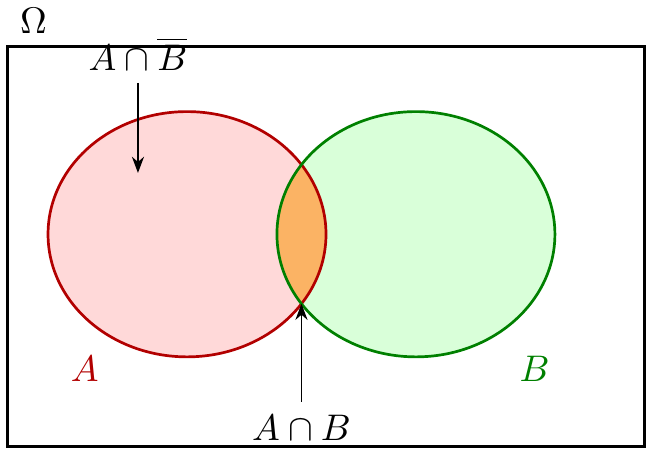
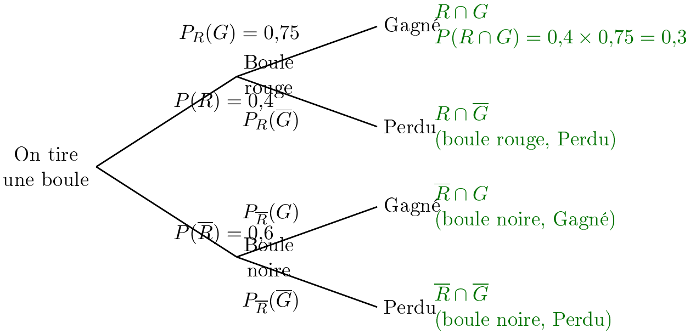
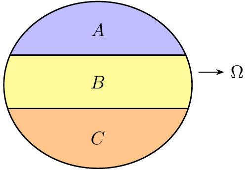
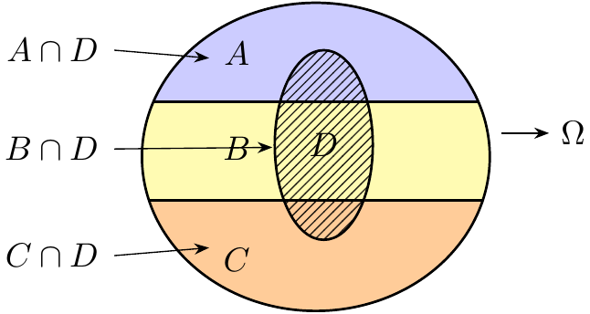
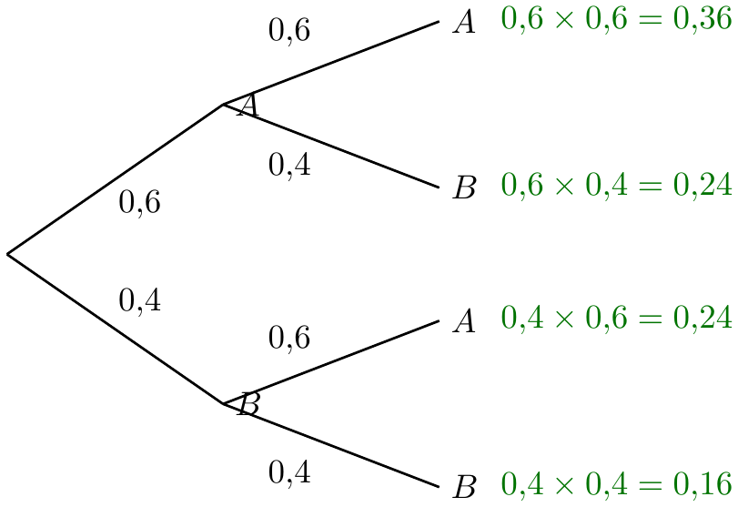

Chapitre 5 : Probabilités conditionnelles
Première spécialité · Chapitre 5 — Probabilités conditionnelles · cours de Frederik de Peyrelongue
Les probabilités conditionnelles apparaissent dans les travaux de Bayes et de Moivre, écrits en anglais au XVIIIe siècle, même si c'est Laplace qui en a élaboré la notion. Les questions traitées par ces auteurs peuvent parfois surprendre (exemple : quelle est la probabilité que le soleil se lève demain, sachant qu'il s'est levé depuis le commencement du monde ?) ; néanmoins, les probabilités conditionnelles sont omniprésentes dans la vie courante et leur utilisation inappropriée mène facilement à de fausses affirmations.
I. Définition
On considère une expérience aléatoire dans l'univers, noté $\Omega$, fini, et à partir duquel on définit une loi de probabilité. Soient $A$ et $B$ deux événements de l'univers $\Omega$.
- L'événement $A$ inter $B$, noté $A\cap B$, est l'ensemble des événements élémentaires contenus à la fois dans $A$ ET dans $B$ simultanément.
- L'événement $A$ union $B$, noté $A\cup B$, est l'ensemble des événements élémentaires contenus dans $A$ OU dans $B$.
- L'événement contraire de $A$, noté $\overline{A}$, est composé des événements élémentaires contenus dans l'univers $\Omega$ qui ne sont pas contenus dans $A$.
- On appelle cardinal de $A$, noté $\Card(A)$ ou $\#A$, l'effectif de l'événement $A$, c'est-à-dire le nombre d'événements élémentaires contenus dans $A$.
Tableau d'effectif
| $A$ | $\overline{A}$ | TOTAL | |
| $B$ | $\Card(A\cap B)$ | $\Card(\overline{A}\cap B)$ | $\Card(B)$ |
| $\overline{B}$ | $\Card(A\cap\overline{B})$ | $\Card(\overline{A}\cap\overline{B})$ | $\Card(\overline{B})$ |
| TOTAL | $\Card(A)$ | $\Card(\overline{A})$ | $\Card(\Omega)$ |
Nous considérons un échantillon $\Omega$ de $160$ personnes. Le tableau qui suit donne la répartition femmes-hommes selon deux critères d'âge.
Nous désignons par :
$F$ l'événement : « interroger une femme »,
$A$ l'événement : « interroger une personne d'au plus $25$ ans ».
| $F$=Femme | $\overline{F}$=Homme | Total | |
| $A$ : « au plus $25$ ans » | $40$ | $5$ | $45$ |
| $\overline{A}$ « $26$ ans ou plus » | $80$ | $35$ | $115$ |
| Total | $120$ | $40$ | $160$ |
La probabilité de l'événement $F$ est
La probabilité d'interroger une femme d'au plus $25$ ans est l'événement $A\cap F$ :
On suppose que l'on sait que la personne interrogée est une femme : on dira que l'événement $F$ est réalisé. Quel est alors la probabilité d'interroger une personne d'au plus $25$ ans sachant que $F$ est réalisé ? On notera cette probabilité $\prob_{F}(A)$.
L'univers est alors restreint à $F\cap\Omega=F$, de cardinal $120$.
L'ensemble des issues favorables est restreint à $F\cap A$, de cardinal $40$.
Soit $A$ et $B$ deux événements inclus dans l'ensemble $\Omega$ avec $\prob(A)\neq 0$.
On appelle probabilité conditionnelle de $B$ sachant $A$ la probabilité que l'événement $B$ se réalise sachant que l'événement $A$ est réalisé. Elle est notée $\prob_{A}(B)$ et est définie par :
On tire une carte au hasard dans un jeu de $32$ cartes.
- Soit $A$ l'événement « Le résultat est un cœur ».
- Soit $B$ l'événement « Le résultat est un as ».
Donc $A\cap B$ est l'événement « Le résultat est l'as de cœur ».
Alors
Donc la probabilité que le résultat soit un as sachant qu'on a tiré un cœur est :
Remarque : le calcul de la probabilité conditionnelle de $B$ sachant $A$ revient à restreindre l'univers $\Omega$ à l'ensemble $A$.
La probabilité $\prob_{A}(B)$ vérifie bien
Preuve : on sait que $A\cap B\subset A$, donc $0\leqslant \prob(A\cap B)\leqslant \prob(A)$.
Puisque $\prob(A)>0$, il vient $0\leqslant\dfrac{\prob(A\cap B)}{\prob(A)}\leqslant\dfrac{\prob(A)}{\prob(A)}=1$, d'où $0\leqslant \prob_{A}(B)\leqslant 1$.
Pour tous $A$ et $B$, $(A\cap B)\cup(A\cap\overline{B})=A$ et $(A\cap B)\cap(A\cap\overline{B})=\varnothing$.
Donc $\prob(A)=\prob\bigl((A\cap B)\cup(A\cap\overline{B})\bigr) =\prob(A\cap B)+\prob(A\cap\overline{B})$ et, puisque $\prob(A)\neq 0$,
soit $\prob_{A}(B)+\prob_{A}(\overline{B})=1$.

Si $A$ et $B$ sont deux événements de probabilité non nulle, alors
Preuve : par définition, $\prob_{A}(B)=\dfrac{\prob(A\cap B)}{\prob(A)}$, d'où $\prob(A\cap B)=\prob(A)\times\prob_{A}(B)$.
De même, $\prob_{B}(A)=\dfrac{\prob(A\cap B)}{\prob(B)}$, d'où $\prob(A\cap B)=\prob(B)\times\prob_{B}(A)$.
On a bien :
II. Arbre pondéré
Un sac contient $50$ boules, dont $20$ boules rouges et $30$ boules noires, où il est marqué soit « Gagné », soit « Perdu ».
- Sur $15$ boules rouges, il est marqué Gagné.
- Sur $9$ boules noires, il est marqué Gagné.
On tire au hasard une boule dans le sac.
- Soit $R$ l'événement « On tire une boule rouge ».
- Soit $G$ l'événement « On tire une boule marquée Gagné ».
Donc $R\cap G$ est l'événement « On tire une boule rouge marquée Gagné ».
Alors
et
Donc la probabilité qu'on tire une boule marquée Gagné sachant qu'elle est rouge est :
L'expérience aléatoire peut être schématisée par un arbre pondéré (ou arbre de probabilité) :

Propriétés 3 :
Règle 1 : la somme des probabilités des branches issues d'un même nœud est égale à $1$.
Exemples :
- À partir du nœud « On tire une boule », on a : $\prob(R)+\prob(\overline{R})=0{,}4+0{,}6=1$.
- À partir du nœud « Boule rouge », on a : $\prob_{R}(\overline{G})=1-\prob_{R}(G)=1-0{,}75=0{,}25$.
Règle 2 : la probabilité d'une « feuille » (extrémité d'un chemin) est égale au produit des probabilités du chemin aboutissant à cette feuille. (Formule de Bayes).
Exemple : on considère la feuille $R\cap G$. On a :
Règle 3 (formule des probabilités totales) : la probabilité d'un événement associé à plusieurs « feuilles » est égale à la somme des probabilités de chacune de ces « feuilles ».
Exemple : l'événement « On tire une boule marquée Gagné » est associé aux feuilles $R\cap G$ et $\overline{R}\cap G$. On a :
(probabilité de tirer une boule noire marquée Gagné).
Donc
On dit que $A$, $B$, $C$ forment une partition de l'univers $\Omega$ si :
- $A\cup B\cup C=\Omega$ ;
- $A\cap B=\varnothing$ et $B\cap C=\varnothing$ et $A\cap C=\varnothing$.
$A$ et $\overline{A}$ forment une partition de $\Omega$.

Remarque : dans un arbre de probabilité, on crée une partition de l'univers $\Omega$. On obtient dans l'exemple ci-dessus $4$ événements $R\cap G$, $R\cap\overline{G}$, $\overline{R}\cap G$, $\overline{R}\cap\overline{G}$. Ces $4$ événements sont disjoints deux à deux et dont l'union est $\Omega$ : c'est une partition de l'union $\Omega$.
Intérêt d'une partition : si deux événements sont incompatibles $A\cap B=\varnothing$, alors la probabilité de l'union est la somme des probabilités ! En effet $\prob(A\cap B)=0$, donc $\prob(A\cup B)=\prob(A)+\prob(B)$.
Formule des probabilités totales
Supposons que l'univers $\Omega$ possède une partition en trois événements $A$, $B$ et $C$, et que nous connaissions les probabilités conditionnelles d'un événement $D$ sachant $A$, $B$ et $C$. On sait :
- $D=(A\cap D)\cup(B\cap D)\cup(C\cap D)$ ;
- $(A\cap D)$, $(B\cap D)$ et $(C\cap D)$ sont disjoints deux à deux.
Donc
D'où

Traduction sur un arbre pondéré : sur un arbre pondéré, la probabilité d'un événement $D$ associé à plusieurs feuilles est égale à la somme des probabilités de chacune de ces feuilles.
III. Probabilités et indépendance
3.1 Indépendance de deux événements
On tire une carte au hasard dans un jeu de $32$ cartes.
- Soit $R$ l'événement « On tire un roi ».
- Soit $T$ l'événement « On tire un trèfle ».
Alors $R\cap T$ est l'événement « On tire le roi de trèfle ».
On a :
Donc
On dit que deux événements $A$ et $B$ de probabilité non nulle sont indépendants lorsque
Retour à l'exemple 3 : les événements $R$ et $T$ précédents sont donc indépendants.
Ainsi, par exemple, $\prob_{T}(R)=\prob(R)$ : ce qui se traduit par la probabilité de tirer un roi parmi les trèfles et égale à la probabilité de tirer un roi parmi toutes les cartes.
Contre-exemple : on reprend l'expérience précédente en ajoutant deux jokers au jeu de cartes.
Ainsi :
Donc
Les événements $R$ et $T$ ne sont donc pas indépendants.
Dans une population, un individu est atteint par la maladie $m$ avec une probabilité égale à $0{,}005$ et par la maladie $n$ avec une probabilité égale à $0{,}01$.
On choisit au hasard un individu de cette population.
- Soit $M$ l'événement « L'individu a la maladie $m$ ».
- Soit $N$ l'événement « L'individu a la maladie $n$ ».
On suppose que les événements $M$ et $N$ sont indépendants.
Calculer la probabilité de l'événement $E$ « L'individu a au moins une des deux maladies ».
La probabilité qu'un individu choisi au hasard ait au moins une des deux maladies est égale à $0{,}01495$.
Si $A$ et $B$ sont indépendants, alors $\overline{A}$ et $B$ sont indépendants.
Démonstration :
Donc $\overline{A}$ et $B$ sont indépendants.
Lors d'un week-end prolongé, Bison futé annonce qu'il y a $42$ % de risque de tomber dans un bouchon sur l'autoroute A6 et $63$ % sur l'autoroute A7.
Soit $A$ l'événement « On tombe dans un bouchon sur l'autoroute A6. »
Soit $B$ l'événement « On tombe dans un bouchon sur l'autoroute A7. »
On suppose que les événements $A$ et $B$ sont indépendants.
Alors les événements $\overline{A}$ et $B$ sont également indépendants et on a :
On peut interpréter ce résultat : la probabilité de tomber dans un bouchon sur l'autoroute A7 mais pas sur l'autoroute A6 est égale à $36{,}54$ %.
3.2 Succession de deux épreuves indépendantes
1) On lance un dé plusieurs fois de suite et on note à chaque fois le résultat. On répète ainsi la même expérience (lancer un dé) et les expériences sont indépendantes l'une de l'autre (un lancer n'influence pas le résultat d'un autre lancer).
2) Une urne contient $2$ boules blanches et $3$ boules noires. On tire au hasard une boule et on la remet dans l'urne.
On répète cette expérience $10$ fois de suite. Ces expériences sont identiques et indépendantes.
Plusieurs expériences sont identiques et indépendantes si :
- elles ont les mêmes issues ;
- chaque issue possède la même probabilité.
On considère une expérience aléatoire à deux issues $A$ et $B$ avec les probabilités $\prob(A)$ et $\prob(B)$. Si on répète l'expérience deux fois de suite :
- la probabilité d'obtenir l'issue $A$ suivie de l'issue $B$ est égale à $\prob(A)\times\prob(B)$ ;
- la probabilité d'obtenir l'issue $B$ suivie de l'issue $A$ est égale à $\prob(B)\times\prob(A)$ ;
- la probabilité d'obtenir deux fois l'issue $A$ est égale à $\prob(A)^{2}$ ;
- la probabilité d'obtenir deux fois l'issue $B$ est égale à $\prob(B)^{2}$.
Représenter la répétition d'expériences identiques et indépendantes dans un arbre.
On considère l'expérience suivante :
Une urne contient $3$ boules blanches et $2$ boules rouges. On tire au hasard une boule et on la remet dans l'urne. On répète l'expérience deux fois de suite.
- Représenter l'ensemble des issues de ces expériences dans un arbre.
Déterminer la probabilité :
- d'obtenir deux boules blanches ;
- une boule blanche et une boule rouge ;
- au moins une boule blanche.
1) On note $A$ l'issue « On tire une boule blanche » et $B$ l'issue « On tire une boule rouge ».
On résume les issues de l'expérience dans un arbre de probabilité :

2) a) Obtenir deux boules blanches correspond à l'issue $(A\,;A)$ :
b) Obtenir une boule blanche et une boule rouge correspond aux issues $(A\,;B)$ et $(B\,;A)$ :
c) Obtenir au moins une boule blanche correspond aux issues $(A\,;B)$, $(A\,;A)$ et $(B\,;A)$ :
Remarques :
- Pour une expérience dont le nombre d'issues est supérieur à $2$, le principe reste le même.
- Pour une expérience dont le nombre de répétitions est supérieur à $2$, le principe reste le même.